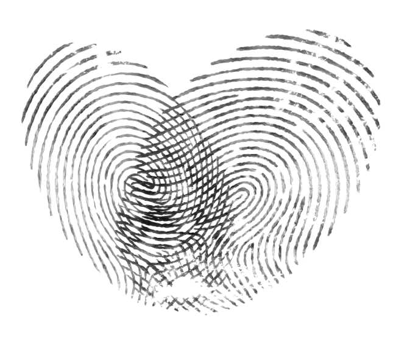

電通台灣《決策智慧 2026》互動讀本
客人喝了一口茶，就把杯子放下。下一壺，你會怎麼泡？
在街圖選一幕，點點紙道具，看看街坊怎麼回應。十二個生活故事，帶你讀懂人、模型與 AI 如何影響日常決定。
手機橫放，左右兩頁和街坊的動作都看得更完整。

後記
早上那壺茶，茶師照著客人的反應重新泡過。現在，攤前也為你留了一杯。
謝謝你陪街坊走這一段。為《決策智慧 2026》的作者點一盞燈，道聲謝。
全書選關地圖
點一個地標入戲，或拖動頁角翻書。
正在展開第一張紙景…
街角的決策智慧
感謝電通台灣《決策智慧 2026》的作者，把工作裡的觀察寫成了這二十二篇文章。點篇名，就能讀到故事的起點。
本書取材自電通台灣《決策智慧 2026》，十二幕故事連到二十二篇原文。